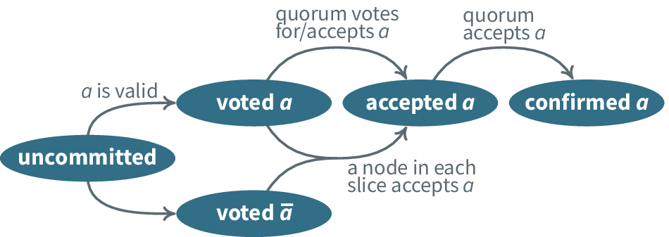

Voting
Voting and Confirmation Rounds
We'll be discussing how the nodes come together to vote, and agree on a given statement. As discussed by Mazieres, and Skeen and Stonebraker 1983, from the node's perspective, it's divided into three phases: unknown, accepted and confirmed. At the very beginning, the status for the slot is not known to the node - which means it could be acceptable, rejectable or even result in a stuck state. If the first voting across the nodes comes through to an acceptance, the node is said to have accepted the message.
Just because the node has accepted the message, however doesn't mean that all the other nodes have accepted it - or if it has been manipulated, then accepting the statement doesn't mean that the rest of the nodes which aren't damaged may think the statement is false. A second vote asks for confirmation whether - the statement that is to be accepted, is actually accepted by a majority of people in it's quorum slice. Therefore, this is when the node moves on towards actually moving the statement as confirmed.

Liveness Guarantees
Considering a terminating execution for a system which can have n=2 possible states, where m is the last message that was passed, and where n=1* states is the state of consensus *, we can say that the message m was the deciding message.
A challenge in establishing consensus, is that any of the statements - the voting is occurring on can go into a stuck state, before a consensus is established. Therefore, if we need to make sure that the statement m, that is the deciding statement doesn't decide the fate of the system anymore, as voting on the value - is not a good idea. We therefore must be able to neutralise a statement - i.e. making sure that a stuck statement doesn't interrupt the liveness of the statement.
By making sure that all the voting is happening on statements that never get stuck, and statements who's hold on the consensus question can be broken, if stuck, we're making a tradeoff in terms of guaranteeing liveness. We don't need provable termination, but termination in practice is good enough, by following the procedure mentioned above. At the end of the day, our network must absolutely avoid stuck states.
Statements that never get stuck, therefore, must be voted on. In order to create such neutralisable statements, we'll be using the ballot-based approach, invented by Paxos [Lamport 1998]. Ballot-based protocols associate the values in votes with monotonically increasing ballot numbers. Should a ballot get stuck, nodes retry the same slot with a higher ballot, taking care never to select values that would contradict prior stuck ballots.
Because the nodes can't change their own values and if nobody votes against the statement, the network can't tend towards a stuck state, or statements who's hold on consensus questions can be broken.
Comments :
Therefore, with a generalised implementation of this protocol, we can deal with both public-ly open systems, as well as permissioned networks, under a generalised approach, therefore providing decentralised control, low latencies for adding to the block, flexible models of trust with a variety of available choices for every node, as well as asymptotic security. This forms a part of the core of the TrstWeb, with applications from Data Storage, to consensus about the applications being served, distributed computing capabilites, and off-chain encrypted data storage.